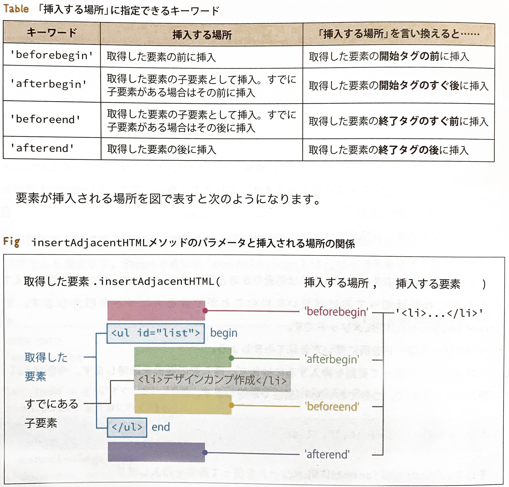
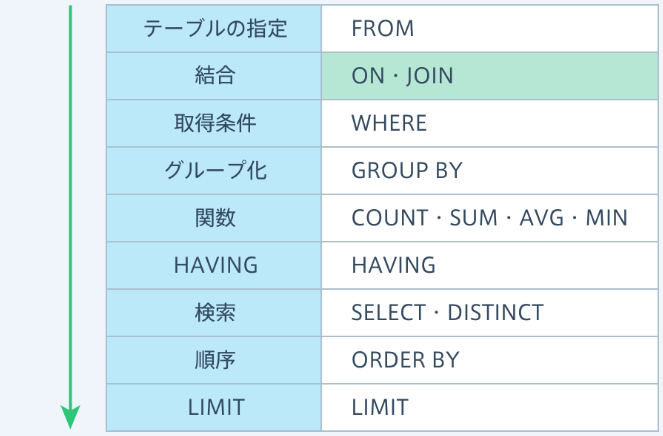

HTML
HTMLタグ
| htmlタグ | 参考 | よく使う属性 | ||||
|---|---|---|---|---|---|---|
| head内 | <meta> | htmlの基本的な設定 | charset=""/name=""/content="" | |||
| 空箱系 | <section> | 階層構造を含むならこれ | ※ | |||
| <article> | sectionよりシンプル | |||||
| <aside> | 脇役的コンテンツ | |||||
| <nav> | メニュー等 | |||||
| <div> | 汎用性高い箱 | |||||
| 文字スタイル系 | <em> | - | 斜体になる | |||
| <strong> | - | 強調表示 検索エンジンに検知される | ||||
| <b> | - | 太字 検索エンジンには検知されない | ||||
| <small> | - | 著作権・免責事項など | ||||
| <br> | - | 改行 終了タグなし | ||||
| <a> | - | リンク先の指定 | ※ | href=""/ target="_blank" | ||
| <span> | - | 汎用インライン要素 | ||||
| 要素追加系 | <ul><ol> | リスト親要素 | ※ | |||
| <img> | - | 画像の挿入 | 〇 | ※ | src=""/alt=""/width=""/height="" | |
| <video> | 動画の挿入 | 〇 | ※ | src=""/autoplay/controls/muted/loop | ||
| <table> | 表の作成 | 〇 | ※ | border/rowspan/colspan | ||
| <form> | フォームの作成 | 〇 | ※ | action="遷移先"/method="post(DB更新)/get(DBから入手)" | ||
| →<input> | form部品・入力欄 | type="text|submit|button"/pattern=""/autofocus/required | ||||
| →<textarea> | form部品・テキストエリア | cols="" rows=""/placeholder=""/name="" | ||||
| →<label> | form部品にラベル追加 | ※ | for="部品の指定" | |||
| →<select> →→<option> |
セレクトボックス | |||||
| 引用 | <blockquote> | 長文引用 | 〇 | ※ | ||
| <q> | 短文引用 | |||||
| <cite> | 引用元表記 | |||||
| 定義リスト | <dl> | 定義リスト | 〇 | ※ | ||
| →<dt> | 被定義 | |||||
| →<dd> | 定義 | |||||
MEMO.
- 「&+copy+;」で©が表示される(＋は入力不要)
- 「../」←ひとつ上のフォルダまでさかのぼってファイルパスを指定する
- <a href="#()"> でページ内リンク※
- 地図リンクはGooglemapの「共有」から簡単にタグを取得できる
- <HR>で水平線
CSS
| セレクタ{プロパティ: 値;} | 参考 | |||
|---|---|---|---|---|
| Flexbox | 親 {display: flex;} | 子要素を横並びに | ※ | |
| 親 {align-items: flex-start/flex-end/center;} | 子要素の垂直方向揃え | |||
| 親 {flex-direction: column;} | 子要素を縦並びに | |||
| 親 {flex-wrap: wrap/nowrap;} | 子要素を折り返して並べる | |||
| 親 {align-content:;} | wrapした場合の子要素のそろえ方の指定 | |||
| 親 {justify-content: space-around/center/space-between;} | 子要素の水平方向揃え | |||
| 子{flex: 整数/auto/initial/none} | ※ | |||
| {box-sizing: border-box/content-box;} | マージン(パディング)をコンテンツのサイズに含める | ※ | ||
| 擬似クラス | a:link {} a:visited {} a:hover {} a:active {} |
未訪問リンクのスタイル指定(上から順に指定↓) 訪問済みリンクのスタイル指定 ホバー中のスタイル指定 クリック中のスタイル指定 |
||
| 〇:first-child{} 〇:last-child{} 〇:nth-child{} |
兄弟要素の中での位置に基づいて選択 | |||
| 擬似要素 | 〇::before{content: '内容';} 〇::after{content: '内容';} |
〇の前後に'内容'を{}のスタイルで表示 | ※ | |
| 整列配置 | {text-align: center;} | 左右中央揃え（インラインとブロックで使い分け） | ||
| {margin: 0 auto;} | ||||
| {align-items: ;} | flexbox設定後に | ※ | ||
| {float: left;} | 左詰めで横並び | ※ | ||
| {position: fixed/relative/asbsolute;} | 固定/相対位置/絶対位置(親にrelative) | ※ | ||
| {z-index: 整数;} | 重ね順の指定(大きな数が上) | ※ | ||
| 文字スタイル | {text-decoration: none/underline/line-through;} | 文字の下線なし/あり/取消し線 | ||
| {line-height: 1.5;} | 行間が文字サイズの1.5倍 | |||
| {list-style: none/square/inside/;} | リストのスタイルの設定 | ※ | ||
| {list-style-image: url(ファイルパス);} | リストの先頭に画像を指定 | ※ | ||
| 装飾系 | {box-shadow: 10px 9px 8px 7px rgba(0,0,0,0.4);} | 影をつける:x y ぼかし 広がり 色(不透明度）; | ※ | |
| {background; linear-gradient(角度・方向, 開始色, 途中色, 終了色);} | 背景グラデーションの設定 | ※ | ||
| 背景画像 | {background-image: url();} | 背景画像のリンク | ※ | |
| {background-repeat: repeat/no-repeat/repeat-x/repeat-y;} | 背景画像のリピート | ※ | ||
| {background-position: center/left/20%/100px;} | 背景画像の表示位置 | ※ | ||
| {background-size: auto/contain/cover/20%;} | 背景画像のサイズ | ※ | ||
| サイズ指定 | {max-width:;} | 最大幅設定 | ※ | |
| {min-width:;} | 最小幅設定 | |||
| 非表示 | {display: none;} | このふたつを使い分ける | ※ | |
| {visibility: hidden;} | ||||
| {overflow: hidden/scroll/auto;} | コンテナからはみ出した子要素の処理 | ※ | ||
| アニメーション | {transition: ;} | この３つを使い分ける | ※ | |
| {animation: ;} | ||||
| {transform: ;} | ※ | |||
MEMO.
- html{font-size: 62.5%;}を設定することで、1.5rem=15pxと計算しやすくなる
- セレクタは並列はカンマで.box,.boxg{}、親子はスペースで区切るmain ul{}※
- CSSの適用３パターンPDF
- 外部ファイルを指定する <link rel="stylesheet" href="css/note.css">
- html上で<style>タグの下にCSSコード
- 要素の中に書いてしまう <h2 style="color: black">見出し</h2>
- line-heightの高さを親要素の高さと同じにすることで、上下中央配置ができる
- heightを「100vh」とすると「ディスプレイの高さ100％」※
- {padding-bottom: 56.25%} 横幅に応じて縦も可変になる(％表示) 16:9は56.25% 4:3は75%
用語
- DOM(Document Object Model)
- htmlのツリー構造のうちbody要素
- 属性セレクタ
- 属性によって要素を特定する a[href="https://example.org"] { }
- URI(information)
- URL(location)とURN(name)のこと
先生のPDF
ブックマーク
JavaScript
JavaScriptリファレンス
| 要素の参照 | .getElementById('id名') | idをもとに参照 | ※ | |
| .getElementsByClass('クラス名') | クラスをもとに参照 | |||
| .firstChild/.lastChild | 長子(末子)要素の参照 | |||
| .childNodes | 子要素リストの参照 | |||
| .parentNode | 親要素リストの参照 | |||
| →[0]/.id名/.item(0)/.item("id1") | リストから各要素の参照 | |||
| .querySelecter('CSSセレクタ') | CSSセレクタで要素を取得する | |||
| 要素の作成 | .createElement('タグ名') | 要素を新たに作成 | ※ | |
| .appendChild(要素) | 作成した要素を子要素として追記 | |||
| コンテンツの作成(置換) | .innerHTML = "<p>Hello!</p>" | ブラウザには「Hello！」 | ||
| .insertAjacentHTML | MEMOの画像参照 | |||
| .textContent = "<p>Hello!</p>" | ブラウザには「<p>Hello!</p>」 | |||
| 出力 | console.log(); | |||
| document.write(); | ||||
| 数値・計算 | parseInt("123") | 整数の123に変換 | ||
| 要素.length | 要素の長さを取得 | |||
| Math.max() | 最大値を取得 | |||
| Math.round() | 小数点以下四捨五入 | |||
| Math.floor() | 小数点以下切り捨て | |||
| Math.random() | 0.0～0.9999からランダムな数値を返す | |||
| ダイアログボックス | window.confirm('メッセージ') | 確認ダイアログボックス | ||
| window.alert('メッセージ') | ||||
| window.prompt('メッセージ') | 入力欄付き | |||
| 配列 | 配列の変数名.pop() | 配列の最後のデータを削除 | ||
| 配列の変数名.push(データ) | 配列の最後にデータを追加 | |||
| 配列の変数名.shift() | 配列の最初のデータを削除 | |||
| 配列の変数名.push(データ1,データ2…) | 配列の最初にデータ1,データ2…を追加 | |||
| event.preventDefault(); | HTMLの基本動作をキャンセル | |||
MEMO.
- insertAdjacentHTML(超万能) 
- イベントハンドラ※
- 要素.イベントハンドラ = function(){処理内容};で要素にイベントを設定
- テンプレートリテラル `モンスターに${attack}のダメージ！`
- for(let 変数名(任意) of 配列名){} ：配列のすべての要素に対して繰り返す
- for(let 変数名(任意) in オブジェクト名){} ：オブジェクトのすべての要素に対して繰り返す
- 縦長の表→配列、横長の表→オブジェクト
先生のPDF
ブックマーク
サンプル
-
九九表(for文)
<!-- 九九表 --> <script> // id tbのついている要素を取得 var tb = document.getElementById('tb'); for(var i = 1; i <= 9; i++) { // 行を作成 var tr = document.createElement("tr"); for(var j = 1; j <= 9; j++) { // 列を作成 var td = document.createElement("td"); // 計算結果値をコンテンツ部分に代入 td.textContent = i * j // 作成したtdを子要素としてtrに追加 tr.appendChild(td); } // 作成したtrをid tbに子要素として追加 tb.appendChild(tr); } </script> -
数当てゲーム(if文・while文)
<script> var number = Math.floor(Math.random() * 6); var message; while(answer !== number){ var answer = parseInt(window.prompt('数当てゲーム、0～5の数字を入力してね！')); if(answer === number) { message = 'あたり！'; window.alert(message); break; }else if(answer >= 6 ){ message = '0～5の数字を入力してね。'; }else if(answer < number){ message = '残念でした！もっと大きい。'; }else if(answer > number){ message = '残念でした！もっと小さい。'; }else{ message = '0～5の数字を入力してね。'; } window.alert(message); } </script> -
桁合わせ・配列
<section><!-- html --> <h2>Standard Revival MP3</h2> <div id="list"></div> </section> <script> var addZero = function(num, digit) { var numString = String(num); while(numString.length < digit) { numString = '0' + numString; //numString += '0'; } return numString; } var songs = [ 'Stella By Starlight', 'Satin Doll', 'Caravan', 'Besame Mucho', 'My Favorite Things', 'Taking A Chance On Love', 'Fly Me To The Moon', 'Waltz For Debby', 'Willow Weep For Me', 'Bluesette' ]; for(var i = 0; i < songs.length; i++){ var paragraph = document.createElement("p"); paragraph.textContent = addZero(i + 1,2) +"." + songs[i]; document.getElementById('list').appendChild(paragraph); } </script> -
日時の表示(new)
<main> <section> <p>最終アクセス日時：<span id="time"></span></p> </section> </main> <script> 'use strict'; const now = new Date(); const year = now.getFullYear(); const month = now.getMonth(); const date = now.getDate(); const hour = now.getHours(); const min = now.getMinutes(); let ampm =''; if (hour < 12){ ampm = 'a.m.'; }else{ ampm = 'p.m.'; } const output = `${year}/${month+1}/${date} ${hour % 12}:${min}${ampm}` document.getElementById('time').textContent = output; </script> -
カウントダウン
<body> <header> <h1>カウントダウンタイマー</h1> <h2>1秒毎に表示を更新</h2> </header> <section> <h2>東京オリンピックまで</h2> <p class="timer">あと<span id="day"></span>日<span id="hour"></span>時間<span id="min"></span>分<span id="sec"></span>秒</p> </section> <script> // due ・・・ 東京五輪開催日の日時情報 var goal = new Date(2020, 6, 24); var countdown = function(due) { var now = new Date(); var rest = due.getTime() - now.getTime();//東京五輪までの日時(ミリ秒) //getTime()...エポック秒(1970/1/1/0時からの経過ミリ秒 var sec = Math.floor(rest / 1000) % 60; var min = Math.floor(rest / 1000 / 60) % 60; var hours = Math.floor(rest / 1000 / 60 / 60) % 24; var days = Math.floor(rest / 1000 / 60 / 60 / 24); var count = [days, hours, min, sec]; return count; } var recalc = function() { var counter = countdown(goal); document.getElementById('day').textContent = counter[0]; document.getElementById('hour').textContent = counter[1]; document.getElementById('min').textContent = counter[2]; document.getElementById('sec').textContent = counter[3]; refresh(); } var refresh = function() { setTimeout(recalc, 1000); } recalc(); </script> </body> -
イベント
<head> <script> var imgChange = function (number){ document.game.src = "img/suika" + number + ".jpg"/* ①画像ファイルパスを生成 */; } </script> </head> <body> <h1>イベントの練習</h1> <p><a href="#" id="suika"> <img src="img/suika1.jpg" name="game" border="0"> </a></p> <script> // ページ読み込み時 window.onload = function(){ window.alert('イラストの上にマウスポインタを乗せてみてください'); //window.は省略可 } // マウスホバー時 document.getElementById("suika").onmouseover = function(){ /* ②画像切り替え処理呼び出し(割れたスイカ) */ imgChange(2) } // マウスが外れた時 document.getElementById("suika").onmouseout = function(){ /* ③画像切り替え処理呼び出し(丸いスイカ) */ imgChange(1) } </script> -
FizzBuzz!
<script> 'use strict'; function fb(num){ if(num%3 === 0 && num%5 === 0){ return 'FizzBuzz!'; }else if(num%3 === 0){ return 'Fizz!'; }else if(num%5 === 0){ return 'Buzz!'; }else{ return num; } } // console.log(fb(15)); for(let i = 1; i <= 30; i ++){ console.log(fb(i)); } </script> -
ツールチップ
<!DOCTYPE html> <html> <head> <title></title> <style> #tooltip li { position: relative; } /*マウスホバー時のli要素の背景色*/ #tooltip li:hover { background: #deb3ba; } /*tooltipの形と色*/ .tooltip-tooltips { display: block; position: absolute; bottom: -2.8em; left: 0.3em; z-index: 9999; width: auto; height: auto; padding: 0.3em 0.5em; color: #FFFFFF; background: #c72439; border-radius: 0.5em; /*角丸*/ } /*tooltipの吹き出し口*/ .tooltip-tooltips:after { width: 100%; content: ""; display: block; position: absolute; left: 0.5em; top: -8px; border-top:8px solid transparent; /*枠線上を透明に*/ border-left:8px solid #c72439; } </style> </head> <body> <ul id="tooltip"> <li data-text="1">サンプルのメニュー1</li> <!-- deta-（任意の名前） --> <li data-text="2">サンプルのメニュー2</li> <li data-text="3">サンプルのメニュー3</li> <li data-text="4">サンプルのメニュー4</li> </ul> <script> var messArray = [ "メッセージ1", "メッセージ2", "メッセージ3", "メッセージ4", ] var message = ""; //#tooltip内のli要素を全て取得(liの配列オブジェクト) var obj = document.getElementById("tooltip").getElementsByTagName("li"); //liの要素数分ループ for(var i = 0; i < obj.length;i++) { //liのインデックス番号iの要素にマウスホバー時 obj.item(i).onmouseover = function () { var element = document.createElement("div"); //tooltip用のdiv要素生成(<div></div>) var num = this.getAttribute('data-text'); //this:今まさにマウスが乗っている。data-text属性の属性値取得(番号) index = parseInt(num) - 1; //番号(文字) → 番号(整数) に変換 message = messArray[index] //メッセージ配列から該当メッセージを取り出す element.innerHTML = message; //tooltip用のdiv要素のコンテンツ部にメッセージを代入。ここではtextContentでも element.className = "tooltip-tooltips"; //tooltip用のdiv要素にクラス名を付与 this.appendChild(element); //マウスホバー対象のli要素の子要素として //tooltip用のdiv要素を追加 } obj.item(i).onmouseout = function () { //tooltipを消す(子要素数は2、子要素[0]はtext、子要素[1]はdiv) this.removeChild(this.childNodes.item(this.childNodes.length - 1)); } } </script> </body> </html> -
オブジェクトの記述
<script> 'use strict'; // オブジェクトの記述( let jabook = { title: 'JavaScript入門', price: 2500, stock: 3 } for (let p in jabook){ let newTd = `<td>${jabook[p]}/</td>`; // console.log(newTd); document.getElementById('bookinfo').insertAdjacentHTML('beforeend',newTd); } </script>
jQuery
$(セレクタ).メソッド(引数);
| .css({ 'color', 'blue',... }); | cssの追記 | |||
| .css('color'); | css情報の取得 | |||
| .text('テキスト') | テキストの置換(タグは含めない) | |||
| .html('<a href="#">テキスト</a>'); | コンテンツ(中身)をタグごと置換 | |||
| .replaceWith('<p>xxx</p>') | .htmlとの違いはタグの書き換えが可能(外のタグから) | |||
| .before('要素'); | 先頭に追記 | |||
| $('要素').insertBefore('セレクタ'); | 上と記述の順序が逆 | |||
| .after('要素'); | 末尾に追記 | |||
| $('要素').insertAfter('セレクタ'); | 上と記述の順序が逆 | |||
| .prepend('要素'); | 前に追記 | |||
| $('要素').prependTo('セレクタ'); | 上と記述の順序が逆 | |||
| .append('要素'); | 後に追記 | |||
| $('要素').appendTo('セレクタ'); | 上と記述の順序が逆 | |||
| $('#id').wrap('<div class="ccc">'); | divで#idを囲む(個別) | |||
| $('.class').wrapAll('<div class="ccc">'); | divで.classをまとめて囲む(間に存在する要素ははじき出される) | |||
| $('.class').wrapInner('<div class="ccc">'); | .classの要素内に入り、テキスト要素をdivで囲む(子要素になる) | |||
| $('#id').unwrap(); | #idの親要素を削除 | |||
| .attr('class', 'q24_a'); | 属性の書き換え | |||
| .removeAttr('href'); | 属性の削除 | |||
| .addClass('aaa'); | クラスの追記 | |||
| .removeClass('aaa'); | クラスの削除 | |||
| .toggleClass('クラス名') | クラスのつけ外し | |||
| .attr('class', 'q27_b') | クラスの書き換え | |||
| $('h1').toggle(2000) | 表示・非表示(2000ミリ秒で) | |||
| .fadeToggle | ||||
| .remove(); | 要素の削除 | |||
| if($(this).hasClass('aaa')) | クラスの有無を調べる | |||
| $('セレクタ').length | 要素の長さを取得 | |||
| $('セレクタ').index(要素) | 要素のインデックス番号の取得 | |||
| .offset({ top: 5430, left: 800 }); | 指定の位置に表示 | |||
| .on('イベント', function(){処理}); | イベントによる処理 | |||
MEMO.
先生のPDF
ブックマーク
サンプル
-
ハンバーガーメニュー(E:\203\41_JS Library\samples)
<!DOCTYPE html> <html > <head> <title>hamburger</title> <style> nav.NavMenu{ position: fixed; /*表示位置を固定*/ z-index: 2; /*重ね順を変更*/ top: 0; /*表示位置を指定*/ left: 0; /*表示位置を指定*/ background: #fff;/*背景を白にする*/ color: #000; /*文字色を黒にする*/ text-align: center; /*テキストを中央揃え*/ width: 100%; /*全幅表示*/ transform: translateY(-100%); /*ナビを上に隠す*/ transition: all 0.6s; /*アニメーションの時間を指定*/ } nav.NavMenu ul{ background: #ccc; /*背景をグレーにする*/ width: 100%; margin: 0 auto; padding: 0; } nav.NavMenu ul li{ font-size: 1.1em; list-style-type: none; padding: 0; width: 100%; border-bottom: 1px dotted #333; } nav.NavMenu ul li:last-child{ padding-bottom: 0; /*最後のメニュー項目のみ下線を消す*/ border-bottom: none; } nav.NavMenu ul li a{ display: block; /*クリックできる領域を広げる*/ color: #000; padding: 1em 0; } nav.NavMenu.active{ transform: translateY(0%); /*ナビを表示する*/ } .Toggle { display: block; position: fixed; /* bodyに対しての絶対位置指定 */ right: 13px; top: 12px; width: 42px; height: 42px; cursor: pointer; z-index: 3; } .Toggle span { display: block; position: absolute; width: 30px; border-bottom: solid 6px #000;/*線の太さ*/ -webkit-transition: .35s ease-in-out; /*変化の速度を指定*/ -moz-transition: .35s ease-in-out; /*変化の速度を指定*/ transition: .35s ease-in-out; /*変化の速度を指定*/ left: 6px; } .Toggle span:nth-child(1) { top: 9px; } .Toggle span:nth-child(2) { top: 18px; } .Toggle span:nth-child(3) { top: 27px; } /* 最初のspanをマイナス45度に */ .Toggle.active span:nth-child(1) { top: 18px; left: 6px; -webkit-transform: rotate(-45deg); -moz-transform: rotate(-45deg); transform: rotate(-45deg); } /* 2番目と3番目のspanを45度に */ .Toggle.active span:nth-child(2), .Toggle.active span:nth-child(3) { top: 18px; -webkit-transform: rotate(45deg); -moz-transform: rotate(45deg); transform: rotate(45deg); } #fade{ display: none; } </style> </head> <body> <nav class="NavMenu"> <ul> <li><a href="#">Menu1</a></li> <li><a href="#">Menu2</a></li> <li><a href="#">Menu3</a></li> <li><a href="#">Menu4</a></li> <li><a href="#">Menu5</a></li> </ul> </nav> <!-- --> <div class="Toggle"> <span></span><span></span><span></span> </div> <script src="https://ajax.googleapis.com/ajax/libs/jquery/3.1.0/jquery.min.js"></script> <script type="text/javascript"> $(function() { $('.Toggle').click(function() { $(this).toggleClass('active'); if ($(this).hasClass('active')) { $('.NavMenu').addClass('active'); //クラスを付与 } else { $('.NavMenu').removeClass('active'); //クラスを外す } }); }); </script> </body> </html> -
アコーディオンパネル(jQuery標準デザイン講座 p174)
$('.faq-list-item').click(function() { var $answer = $(this).find('.answer'); if($answer.hasClass('open')) { $answer.removeClass('open'); $answer.slideUp(); $(this).find('span').text('+'); } else { $answer.addClass('open'); $answer.slideDown(); $(this).find('span').text('-'); } }); -
タブ表示
$(function(){ //タブ表示 //js以外非表示 $('main > div[id != "js"]').hide(); //タブをクリック $('.tab').click(function(){ //いったん全て非表示 $('main > div').hide(); //(href属性を取得).表示 $($(this).children('a').attr("href")).show(); //現在のcurrentクラスを削除 $('.current').removeClass('current'); //選択されたタブにcurrentクラスを追加 $(this).addClass('current'); return false; }); -
要素の追記使い分け
以下の使い分けに注意する この場合結果は同じ $(function(){ $('ul li').last().after('<li>ただの豚</li>'); //[参考]要素の '末尾' にコンテンツを挿入する $('ul').append('<li>ただの豚</li>'); //[参考]要素の '後' にコンテンツを挿入する－１ $('ul').after('<li>ただの豚</li>'); //[参考]要素の '後' にコンテンツを挿入する－２ $('ul li:last-child').after('<li>ただの豚</li>'); });
SQL
DDL(データ定義言語)
| CREATE DATABASE データベース名; | 「データベース名」というデータベースを作成 | |
| CREATE TABLE テーブル名( num INT(2) NOTNULL code CHAR(4) NOT NULL name VARCHAR(20) NOT NULL PRIMARY KEY (code) ); |
「テーブル名」という表を作成（ 「num」という列(2桁の数値、NULLを許さない) 「code」という列(固定長４文字) 「name」という列(可変長20文字) nameを主キーに設定 ) |
|
| USE データベース名; | 「データベース名」というデータベースを使用 | |
| SHOW DATABASES; | データベースを確認 | |
| SHOW TABLES; | テーブルを確認 | |
| SHOW COLUMNS FROM テーブル名; | テーブルの列の内容を確認 | |
| ALTER TABLE テーブル名 ADD 列名 INT(データ型) DEFAULT 0; | 「テーブル名」に列「列名」を追加 | |
| DROP TABLE テーブル名; | テーブルの削除 |
DML(データ操作言語)
| SELECT 列1,列2 FROM テーブル名; | テーブル名から列1,列2を表示 | |
| SELECT DISTINCT 列名 ... | 列名を重複を除いて表示 | |
|
…WHERE 列名='データ' (OR/AND); 列名 LIKE 'A%(%A/%A%)' ; 列名 IN ('a', 'b', 'c') ; |
条件(行を指定) 部分一致 Aで始まる(終わる/含む)「_」は任意の一字 列名のデータがa,b,cの行を指定 |
|
| … LIMIT 行数 ; | 行数を制限 | |
| … ORDER BY 列名 (DESC/ASC) ; | 列名を基準に並べ替え(降順/昇順) | |
|
SELECT SUM(列名1) ... GROUP BY 列名2; AVG(),MAX(),MIN(),COUNT() |
列名2ごとの列名1の合計 平均,最大,最小,データ数 |
|
| ... HAVING 条件; | GROUP BY を使った集計列の条件はWHEREでなくHAVINGで指定 | |
| ... 列名 AS 別名 ...; | 列名に別名を持たせる(asを省略して半角スペースも可) | |
|
SELECT (テーブル名1.列名1,テーブル名2.列名2) FROM テーブル名1 INNER JOIN テーブル名2 ON テーブル名1.列名a = テーブル名2.列名b ; |
テーブル名1とテーブル名2を列名1と列名2で内部結合(両方に存在するデータ) | |
|
SELECT (テーブル名1.列名1,テーブル名2.列名2) FROM テーブル名1 LEFT(RIGHT) JOIN テーブル名2 ON テーブル名1.列名a = テーブル名2.列名b ; |
テーブル名1とテーブル名2を列名1と列名2で左(右)外部結合 | |
| UPDATE テーブル名 SET 列名 = 値 WHERE ... ; | 指定した行の値を更新する | |
| INSERT INTO テーブル名 (列名1,列名2) VALUES ('値1','値2'),('値3','値4') ; | 新たに(値1,値2),(値3,値4)の2行を挿入する | |
| DELETE FROM テーブル名 WHERE ... ; | WHEREで指定した行を削除する |
DCL(トランザクション)
| START TRANSACTION ; | トランザクション処理の開始 | |
| COMMIT ; | トランザクションの確定 | |
| ROLLBACK ; | COMMIT直後まで戻す | |
| SAVEPOINT セーブポイント名 ; | セーブポイントの作成 | |
| ROLLBACK TO セーブポイント名 ; | セーブポイント名に戻る |
MEMO.
- MAMP/Open start page/tools/phpMyAdmin
- 照合順序(collation)はutf8_general_ci
-
処理の実行順序

先生のPDF
ブックマーク
サンプル
-
サンプル名
PHP
| スーパーグローバル変数 | $_GET[""] | GET通信から渡された変数の連想配列 | ※ | |
| $_POST[""] | POST通信から渡された変数の連想配列 | |||
| $_SERVER['PHP_SELF'] | 自身のページのURL form属性：action="<?php echo es($_SERVER['PHP_SELF']); ?>" |
|||
| $_COOKIE | ||||
| $_SESSION | ||||
| 定数 | const 定数 = ...; | 狭い定数 | ||
| define("TAX",0.08); | 広い定数 | |||
| ブラウザに出力 | echo | |||
| print_r() | 変数の内容を確認 | ※ | ||
| var_dump() | 変数の内容を確認 | |||
| var_export() | 変数の内容を確認 | |||
| 数値 | number_format() | 3桁ごとにカンマを追加 | ※ | |
| mt_rand(0,9) | 0～9から乱数を生成 | |||
| ctype_digit() | 正の整数かどうか調べる | |||
| count() | 要素の数を取得 | |||
| strlen() | 文字数を取得 | |||
| array_sum($配列名) | 配列の値の合計を計算 | |||
| 真偽判定 | isset() | フォーム等で情報がセットされているか(true,false) | ※ | |
| empty() | 変数が空か調べる(true,false) | |||
| is_numeric() | 数字または数値形式(+,-,=>,.)か調べる(true,false) | |||
| is_array() | ()が配列かどうか(true,false) | |||
| array_map(関数名,配列) | 配列の中各要素に対して関数を適用 | ※ | ||
| require_once("ファイルパス") | ファイルを読み込む | |||
| エンコーディング | mb_check_encoding() | 文字列が指定したエンコーディングで有効か調べる | ||
| mb_convert_encoding() | 文字エンコーディングを変換する | |||
| mb_internal_encoding() | 内部文字エンコーディングを設定あるいは取得 | |||
| 変換 | implode() | 配列を文字列に変換 | ※ | |
| explode | 文字列を配列に変換 | |||
| htmlspecialchars() | HTMLエスケープ | ※ | ||
| trim() | 文字列の先頭・末尾にある空白文字を取り除く | ※ | ||
| exit('メッセージ') | エラーメッセージを出して、以下のコードをすべてキャンセル | |||
MEMO.
- "{$age}歳なので{$price}円です。"←JSにおけるテンプレートリテラル
- 「.=」は文字列における「+=」。代入ではなく追加
- continue; ループ中で現在の周だけをスキップ
先生のPDF
ブックマーク
サンプル
-
コロンで区切ったif構文
<?php $age = 25; ?> <?php if ($age<=15):?> 15歳以下の料金は500円です。<br> <?php elseif($age<=19):?> 16歳から19歳は2,000円です。<br> <?php else :?> 20歳以上の大人は2,500円です。<br> <?php endif ; ?> -
配列
１．配列をarray()で作る <pre> <?php $colors = array("赤","青","黄色"); //デバッグ(以下2つを使い分け) print_r($colors); var_dump($colors); ?> </pre> ２．配列に値を追加していく <pre> <?php // 空の配列を用意する $colors = []; $colors[3] = '赤'; $colors[0] = '青'; $colors[1] = '黄'; $colors[2] = '白'; //確認する print_r($colors); var_dump($colors); ?> </pre> -
連想配列
１． <pre> <?php // 連想配列を作る $goods = [ 'id' => 'R56', 'size' => 'M', 'price' => 2340 ]; // priceキーの値を変更する $goods['price'] = 3500; //表示する echo "id:".$goods['id']."\n"; echo "サイズ:".$goods['size']."\n"; echo "価格:".number_format($goods['price'])."円\n"; ?> </pre> <?php //arrayでも作れる $goods = array( 'id' => 'R56', 'size' => 'M', 'price' => 2340 ); $goods['a'] = 'b'; $goods['price'] = 100; print_r($goods); ?> ２． <pre> <?php $namelist = ["赤井一郎","伊藤五郎","上野信二"]; echo "<ol>","\n"; //配列から順に値を取り出す foreach ($namelist as $key => $value) { echo"<li>",$value,"さん</li>\n"; } echo "</ol>"; ?> </pre> -
練習問題(ex2)
<!DOCTYPE html> <html> <head> <meta charset="utf-8"> <title>ex2</title> </head> <body> Q1.xに10を代入し、それに５を３回足し結果を出力せよ。 <br> <?php $x = 10; for($i = 1; $i <= 3; $i++){ $x += 5; } echo "Ans:{$x}"; ?> <br> Q2.1～10の乱数を生成して、それが偶数か奇数かを判定 <br> <?php $ran = mt_rand(1,10); if($ran%2 === 0){ echo "{$ran}は偶数"; }else{ echo "{$ran}は奇数"; } //※別解(三項演算子) // echo ($a %2 ===0)?"{$a}は偶数":"{$a}は奇数"; ?> <br> Q3.変数bottomに4.3を代入、変数heightに5.4を代入して、三角形の面積を求めよ。 <br> <?php $bottom = 4.3; $height = 5.4; $area = $bottom*$height/2; echo "底辺:{$bottom},高さ:{$height},の三角形の面積は:{$area}"; ?> <br> Q4.結婚しているかどうかを管理する変数isMarriedにtrueを代入する。<br> isMarriedがtrueならば「結婚しています。」<br> falseならば「結婚していません。」と出力する。<br> <?php $isMarried = true; if($isMarried){ echo "結婚しています。"; }else{ echo "結婚していません。"; } //別解 // $isMarried = true; // echo $isMarried ? "結婚しています。" : "結婚していません。"; // $result = $isMarried ? "結婚しています。" : "結婚していません。"; // echo $result; ?> <br> Q5.0～100の乱数を一つ生成し、それが80以上なら「Excellent！」,50以上なら「Good」, それ以外は「Bad」と表示する<br> <?php $num = mt_rand(0,100); echo "Score:{$num}"; if($num >= 80){ echo "Excelent!"; }else if($num >= 50){ echo "Good"; }else{ echo "Bad"; } ?> <br> Q6-1.0～9の乱数を5つ生成し、それの合計(sum)と平均(avg)を求める<br> <?php $sum = 0; $loop = 5; for($i = 1; $i <= $loop; $i++){ $num = mt_rand(0,9); echo "{$num},"; $sum += $num; } $avg = $sum/$loop; echo "の{$loop}個の数値の合計は{$sum}平均は{$avg}"; ?> <br> 別解 <?php $sum = 0; $loop = 5; $nums = []; for($i = 1; $i <= $loop; $i++){ $num = mt_rand(0,9); $nums[$i] = $num; $sum += $num; } $avg = $sum/$loop; $numbers = implode(',',$nums); echo "{$numbers}の{$loop}個の数値の合計は{$sum}平均は{$avg}"; ?> Q6-2. <?php $numlist = array(mt_rand(0,9),mt_rand(0,9),mt_rand(0,9),mt_rand(0,9),mt_rand(0,9)); $ans1 = array_sum($numlist); $ans2 = array_sum($numlist)/count($numlist); echo "5個の数値の合計は {$ans1} 平均は {$ans2}" ?> <br> Q7-1.0～100の乱数を10個生成し、50以上の値の個数を求める。<br> <?php $nums = []; for($i = 1; $i <= 10; $i++){ $nums[] = mt_rand(0,100); } // 確認 print_r($nums); $count = 0; foreach ($nums as $value) { if($value > 50){ $count ++; } } echo "50以上の値は{$count}個ありました。"; ?> <!-- 別解 <?php $sum = 0; $loop = 10; for ($i=1; $i<=$loop; $i++){ $rnd = mt_rand(0,100); if($rnd >= 50){ $sum++; } } // echo "50以上の値は{$sum}個ありました"; ?> --> <br> Q7-2. <?php $nums = []; $count = 0; for($i = 0; $i <= 9; $i++){ $nums[] = mt_rand(0,100); if($nums[$i] > 50){ $count ++; } } // 確認 print_r($nums); echo "50以上の値は{$count}個ありました。"; ?> <br> Q8-1.サイコロを２個ふって、２個の合計を点数とする。 ただし、ゾロ目の場合は点数は２倍となる。 サイコロの目と点数を表示せよ。<br> <?php $dice1 = mt_rand(1,6); $dice2 = mt_rand(1,6); echo "dice1は{$dice1},dice2は{$dice2},"; if($dice1 === $dice2){ $score = ($dice1 + $dice2)*2; }else{ $score = $dice1 + $dice2; } echo "Score:{$score}"; ?> <br> Q8-2.サイコロをn個ふって、n個の合計を点数とする。 ただし、ゾロ目の場合は点数はn倍となる。 サイコロの目と点数を表示せよ。<br> <?php $diceNumO = mt_rand(1,6);//まず一回振る $countd = 100;//サイコロを振る回数 echo "n={$countd}の場合: "; echo "{$diceNumO},"; $sum = $diceNumO;//出た目の合計(この時点では1回振った分) $zoro = 1;//ゾロ目の連続回数(この時点では1回) for($i = 2; $i <= $countd; $i++){ $diceNumI = mt_rand(1,6);//２回目以降のサイコロを振る echo "{$diceNumI},"; $sum += $diceNumI;//合計に足していく if($diceNumI === $diceNumO){ $zoro ++;//ゾロ目の回数を足す } } $point = 0;//得点 if($zoro === $countd){//ゾロ目の数がサイコロを振った数と同じならば、 $point = $sum*$countd; }else{ $point = $sum; } echo "{$point}点です。" ?> <br> Q9.1～100までの和を求めよ。<br> <?php $sum = 0; $loop =100; for($i = 1; $i <=$loop; $i++){ $sum = $sum + $i; } echo "1から100まで足すと{$sum}です."; ?> <br> Q10-1.1～4までの乱数を発生させ、 1なら大吉、2なら中吉、3なら吉、4なら凶と表示するおみくじを作成せよ。<br> <?php $ran = mt_rand(1,4); switch($ran){ case 1: echo "大吉"; break; case 2: echo "中吉"; break; case 3: echo "小吉"; break; case 4: echo "凶"; break; } ?> <br> Q10-2. <?php $ran = mt_rand(1,4); $kuji = array("大吉","中吉","小吉","凶"); echo $kuji[$ran-1]; ?> </body> </html> -
function(ex3)
<!DOCTYPE html> <html lang="ja"> <head> <meta charset="utf-8"> <title>ex3q</title> </head> <body> Q1.引数なしのユーザ定義関数helloWorld()を作成し、 こんにちは世界と表示する機能を作成せよ。 <?php function helloWorld(){ echo "こんにちは世界"; } helloWorld(); ?> <br> Q2-1.引数を1つもち、引数に商品の金額$deptを受け取ることができる ユーザ定義関数calcItem($dept)を作成し、金額を受け取った後、 消費税（８％）込みの金額を計算し返す機能を作成せよ。 <?php const TAX = 0.08; // define('TAX', '0.08'); function calcItem($dept){ $price = $dept*(1 + TAX); return $price; } $includ = calcItem(1000); echo "税込{$includ}円"; ?> <br> Q2-2.引数を2つもち,引数に 財布の中身の金額$walletと、 消費税込みの金額$itemCostをうけることができる ユーザ定義関数calcMyWallet($wallet,$itemCost)を作成し、 財布の中身と、商品の税込み金額を用いて、 財布の中身を計算し表示する機能を作成せよ。 <?php function calcMyWallet($wallet,$itemCost){ $amount = $wallet - calcItem($itemCost); return $amount; } echo "残額は".calcMyWallet(1000,500)."円"; ?> </body> </html> -
チェックボックス(sample07)
<!-- <label for="Q2">問２.習得したいプログラム言語は？(複数選択可)</label> <input type="checkbox" name="lang[]" value="JavaScript">JavaScript<br> <input type="checkbox" name="lang[]" value="PHP">PHP<br> <input type="checkbox" name="lang[]" value="Java">Java<br> <input type="checkbox" name="lang[]" value="C#">C#<br> ↓↓↓↓↓↓↓↓↓↓ lang[JavaScript,PHP,Java,C#]という配列からチェックが入ったものだけ取り出した配列 --> <?php echo "問１.<br>"; echo $_GET["trigger"]."<br><br>"; echo "問２.<br>"; $result = "";//空箱を用意 // $selected = count($_GET["lang"]);//配列の個数 // for($i = 0; $i < $selected; $i++){ // $result .= $_GET["lang"][$i];//空箱に追記：配列"lang[] // if($i < ($selected - 1)){ // $result .= ","; // } // } // ⇔ implodeで書き換えられる $result = implode(",",$_GET["lang"]); echo $result; -
HTMLエスケープ・エンコードチェック(sample08)
<?php //XSS対策のためのHTMLエスケープ function es($data){ //$dataが配列のとき if(is_array($data)){ //return 再帰呼び出し // __METHOD__(マジック定数)は自自分自身のfunction()を指すここでは es //array_map()は指定した配列の要素にコールバック関数を適用 return array_map(__METHOD__, $data); }else{ //HTMLエスケープを行う // htmlspecialchars() htmlエスケープ処理を行う関数 return htmlspecialchars($data,ENT_QUOTES,'utf-8'); } } //配列の文字エンコードのチェックを行う function cken(array $data){ $result = true; foreach ($data as $key => $value) { if (is_array($value)) { //含まれている値が配列のとき、文字列に連結する //implode() 配列要素を文字列により連結する $value = implode("",$value); } //mb_check_encoding() 文字列が指定したエンコーディングで有効か調べる if(!mb_check_encoding($value)){ //文字エンコードが一致しないとき $result = false; //foreachでの走査をブレイクする break; } } return $result; } //?> -
HTMLエスケープのテスト(sample08)
<!DOCTYPE html> <html lang="ja"> <head> <meta charset="utf-8"> <title>XSS対策 es()</title> </head> <body> <?php //util.phpを読み込む require_once("lib/util.php"); //HTMLタグの入ったデータを用意する $myCode = "<script>alert('hello')</script>"; //es()でHTMLエスケープして表示する echo '$myCodeの値:', es($myCode); ?> </body> </html> -
エンコードチェックのテスト(sample08)
<!DOCTYPE html> <html lang="ja"> <head> <meta charset="utf-8"> <title>不正なエンコーディングによる攻撃対策 cken()</title> </head> <body> <?php require_once("lib/util.php"); //Shift-JISのデータを用意する $utf8_string = "こんにちは"; //mb_convert_encoding() 文字エンコーディングを変換する $sjis_string = mb_convert_encoding($utf8_string, 'Shift-JIS'); //内部エンコーディングを調べる //mb_internal_encoding() 内部文字エンコーディングを設定あるいは取得（ここではutf-8） $encoding = mb_internal_encoding(); // cken()でチェックする(trueかfalse) if (cken([$sjis_string])) { echo '配列の値は、', $encoding, 'です。'; }else{ echo '配列の値は、', $encoding, 'ではありません。'; } ?> </body> </html> -
⇒nameCheck(sample09)
<!DOCTYPE html> <html lang="ja"> <head> <meta charset="utf-8"> <title>フォーム入力</title> <link href="css/style.css" rel="stylesheet"> </head> <body> <div> <form method="POST" action="nameCheck.php"> <ul> <li><label>名前：<input type="text" name="name"></label></li> <li><input type="submit" value="送信する"></li> </ul> </form> </div> </body> </html> 別ファイル <!DOCTYPE html> <html lang="ja"> <head> <meta charset="utf-8"> <title>フォーム入力チェック</title> <link href="css/style.css" rel="stylesheet"> </head> <body> <div> <?php require_once("lib/util.php"); //文字エンコードの検証 if(!cken($_POST)){ $encoding = mb_internal_encoding(); $err = "Encoding Error! The expected encoding is".$encoding ; //エラーメッセージを出して、以下のコードをすべてキャンセルする //exit():()の中のメッセージを最後にすべての処理を終える exit($err); } //HTMLエスケープ(XSS対策) $_POST = es($_POST); ?> <?php // エラーフラグ $isError = false;//←ここでは正常な状態を意味する //名前を取り出す //isset() 空白以外はtrue if (isset($_POST['name'])){ // $name = trim($_POST['name']); //半角空白()、タブ()、改行()、キャリッジリターン、NUL、垂直タグ、全角空白 $name = trim($_POST['name'],"\x20\t\n\r\0\v "); if($name === ""){ //入力データが空白文字の時、trim結果が空文字となりエラー $isError = true; } }else{ //未設定の時エラー $isError = true; } ?> <?php if($isError): ?> <!-- エラーがあったとき --> <span class="error">名前を入力してください</span> <form method="POST" action="nameCheckForm.php"> <input type="submit" value="戻る"> </form> <?php else: ?> <!-- エラーがなかった時 --> <span> こんにちは、 <?php echo $name; ?>さん </span> <?php endif; ?> </div> </body> </html> -
⇒割り勘(sample09)
<!DOCTYPE html> <html lang="ja"> <head> <meta charset="utf-8"> <title>割り勘フォーム</title> <link rel="stylesheet" href="css/style.css"> </head> <body> <div> <form method="POST" action="warikan.php"> <ul> <li><label>合計金額：<input type="number" name="goukei" ></label></li> <li><label>人数：<input type="number" name="ninzu" ></label></li> <li><input type="submit" value="割り勘する"></li> </ul> </form> </div> </body> </html> 別ファイル <!DOCTYPE html> <html lang="ja"> <head> <meta charset="utf-8"> <title>割り勘計算</title> <link rel="stylesheet" href="css/style.css"> </head> <body> <div> <?php require_once("lib/util.php"); //文字エンコードの検証 if (!cken($_POST)){ $encoding = mb_internal_encoding(); $err = "Encoding Error! The expected encoding is " . $encoding ; //エラーメッセージを出して、以下のコードをすべてキャンセル exit($err); } //HTMLエスケープ(XSS対策) $_POST = es($_POST); ?> <?php // エラーメッセージを入れる配列 $errors = []; ?> <?php // 合計金額のチェック if (isset($_POST['goukei'])){ $goukei = $_POST['goukei']; if (!ctype_digit($goukei)) { //0以上の整数でないときはエラー $errors[] = "合計金額は整数で入力してください。"; } }else{ //未設定のエラー $errors[] = "合計金額が未設定"; } // 人数のチェック if (isset($_POST['ninzu'])) { $ninzu = $_POST['ninzu']; if (!ctype_digit($goukei)) { // 0以上の整数ではないときエラー $errors[] = "人数を整数で入力してください。"; }else if ($ninzu == 0) { // 0のときエラー $errors[] = "0人では割れません。"; } }else{ //未設定エラー $errors[] = "人数が未設定"; } ?> <?php if (count($errors) > 0){ //エラーがあったとき echo '<ol class="error">'; foreach ($errors as $value) { echo "<li>{$value}</li>"; } echo "</ol>"; ?> <!-- 戻りボタンのフォーム --> <form method="POST" action="warikanForm.php"> <ul> <li><input type="submit" value="戻る"></li> </ul> </form> <?php } else { // エラーがなかったとき $amari = $goukei % $ninzu; $price = ($goukei - $amari) / $ninzu; // ３桁位取り $goukei_fmt = number_format($goukei); $price_fmt = number_format($price); //表示する echo "{$goukei_fmt}円を{$ninzu}人で割り勘します。", "<br>"; echo "１人当たり{$price_fmt}円を支払えば、不足分は{$amari}円です。"; } ?> </div> </body> </html> -
現在のページにPOSTする(sample10)
<!DOCTYPE html> <html lang="ja"> <head> <meta charset="utf-8"> <title>計算ページ</title> <link href="../css/style.css" rel="stylesheet"> </head> <body> <div> <?php require_once("../lib/util.php"); //文字エンコードの検証 if (!cken($_POST)) { $encoding = mb_internal_encoding(); $err = "Encoding Error! The expected encoding is " . $encoding ; //エラーメッセージを出して、以下のコードをすべてキャンセルする exit($err); } //HTMLエスケープ(XSS対策) $_POST = es($_POST); ?> <?php //POSTされた値を取り出す if (isset($_POST["mile"])) { //数値かどうか確認する $isNum = is_numeric($_POST["mile"]); if($isNum){ //数値ならば計算式とフォームの表示の値で使う $mile = $_POST["mile"]; $error = ""; }else{ $mile = ""; $error = '<span>数値を入力してください</span>'; } }else{ //POSTされた値がないとき(初回表示の時も) $isNum = false; $mile = ""; $error = ""; } ?> <!-- 入力フォームを作る（現在のページにPOSTする） --> <!-- $_SERVER['PHP_SELF'] = 自分自身のページのURL エスケープ処理もする --> <form method="POST" action="<?php echo es($_SERVER['PHP_SELF']); ?>"> <ul> <li> <label>マイルをkmに換算： <input type="text" name="mile" value="<?php echo $mile; ?>"> </label> <!-- エラー表示 --> <?php echo $error; ?> </li> <li><input type="submit" value="計算する"></li> </ul> </form> <?php //$mileが数値であれば計算結果を表示する if ($isNum) { echo "<HR>"; $kilometer = $mile * 1.609344; echo "{$mile}マイルは{$kilometer}kmです。"; } ?> </div> </body> </html> -
データベース連携
<!DOCTYPE html> <html lang="ja"> <head> <meta charset="utf-8"> <title>PDOでデータベースに接続する</title> <link rel="stylesheet" href="../../css/style.css"> </head> <body> <div> <?php //データベースユーザ $user = 'testuser'; $password = 'pw4testuser'; //利用するデータベース $dbName = 'testdb'; //MySQLサーバ(MAMPのPreferencesのPortから確認) $host = 'localhost:3306'; // MySQLのDSN文字列(データのありかを文字列にしたもの) $dsn = "mysql:host={$host};dbName={$dbName};charset=utf8"; //MySQLデータベースに接続する try { $pdo = new PDO($dsn,$user,$password); // プリペアドステートメントのエミュレーションを無効にする $pdo->setAttribute(PDO::ATTR_EMULATE_PREPARES,false); //例外がスローされる設定にする $pdo->setAttribute(PDO::ATTR_ERRMODE,PDO::ERRMODE_EXCEPTION); echo "データベース{$dbName}に接続しました。"; //接続を解除する $pdo = NULL; // Exeption：例外オブジェクト(エラーに関する様々な情報をもつ) 別名$eに設定している } catch (Exception $e) { echo'<span class="error">エラーがありました。</span><br>'; echo $e->getMessage(); exit(); } ?> </div> </body> </html> -
$_SESSION
<!-- =========================================== ファイル1.「input.php」 =============================================--> <?php // セッションの開始 session_start(); require_once("../../lib/util.php"); // 確認ページから戻ってきたとき、セッション変数の値を取り出す if (empty($_SESSION['name'])) { $name = ""; }else{ $name = $_SESSION['name']; } if (empty($_SESSION['kotoba'])) { $kotoba = ""; }else{ $kotoba = $_SESSION['kotoba']; } ?> <!DOCTYPE html> <html lang="ja"> <head> <meta charset="utf-8"> <title>入力ページ</title> <link href="../../css/style.css" rel="stylesheet"> </head> <body> <div> アンケート（１／２）<br> <form method="POST" action="dogcat.php"> <ul> <li><label>名前： <input type="text" name="name" placeholder="ニックネーム可" value="<?php echo es($name) ?>";> </label></li> <li><label>好きな言葉： <input type="text" name="kotoba" value="<?php echo es($kotoba) ?>";> </label></li> <li><input type="submit" value="次へ"></li> </ul> </form> </div> </body> </html> <!-- =========================================== ファイル2.「dogcat.php」 =============================================--> <?php // セッションの開始 session_start(); require_once("../../lib/util.php"); // $_POST変数に値があれば セッション変数に受け渡す if (isset($_POST['name'])) { $_SESSION['name'] = $_POST['name']; } if (isset($_POST['kotoba'])) { $_SESSION['kotoba'] = $_POST['kotoba']; } //セッション変数に値があれば受け渡す if (empty($_SESSION['dogcat'])) { $dogcat = []; }else{ $dogcat = $_SESSION['dogcat']; } ?> <?php // 初期値でチェックするかどうか(<input>の属性値 checked を出力するか) function checked($value,$question){ if (is_array($question)) { //配列の時、値が含まれていればtrue $isChecked = in_array($value, $question); }else{ //配列ではないとき、値が一致すればtrue $isChecked = ($value === $question); } if($isChecked){ //チェックする echo "checked"; }else{ echo ""; } } ?> <!DOCTYPE html> <html lang="ja"> <head> <meta charset="utf-8"> <title>犬好き猫好きページ</title> <link href="../../css/style.css" rel="stylesheet"> </head> <body> <div> アンケート（２／２）<br> <form method="POST" action="confirm.php"> <ul> <li><span>犬が好きですか？猫が好きですか?</span><br> <label><input type="checkbox" name="dogcat[]" value="犬" <?php checked("犬", $dogcat); ?> >犬が好き</label><br> <label><input type="checkbox" name="dogcat[]" value="猫" <?php checked("猫", $dogcat); ?> >猫が好き</label> </li> <input type="button" value="戻る" onclick="location.href='input.php'"> <input type="submit" value="確認する"> </ul> </form> </div> </body> </html> <!-- =========================================== ファイル3.「confirm.php」 =============================================--> <?php // セッションの開始 session_start(); require_once("../../lib/util.php"); ?> <?php // 文字エンコードの検証 if (!cken($_POST)){ $encoding = mb_internal_encoding(); $err = "Encoding Error! The expected encoding is " . $encoding ; $isError = true; // エラーメッセージを出して、以下のコードをすべてキャンセルする exit($err); } ?> <?php // 入力データの取り出しとチェック $error = []; // セッション変数に値があれば受け渡す if (empty($_SESSION['name'])){ $error[] = "名前を入力してください。"; } else { $name = $_SESSION['name']; } if (empty($_SESSION['kotoba'])){ $error[] = "好きな言葉を入力してください。"; } else { $kotoba = $_SESSION['kotoba']; } // $_POST変数に値があれば セッション変数に受け渡す if (isset($_POST['dogcat'])){ $dogcat = $_POST['dogcat']; $_SESSION['dogcat'] = $dogcat; // 値のチェック(セキュリティ)犬、猫以外 $diffValue = array_diff($dogcat, ["犬", "猫"]); // 規定外の値が含まれていなければOK if (count($diffValue)>0){ $error[] = "犬好き猫好きの回答にエラーがありました。"; } $dogcatString = implode("好きで、", $dogcat) . "好きです。"; } else { $dogcatString = "どちらも好きではありません。"; $_SESSION['dogcat'] = []; } ?> <!DOCTYPE html> <html lang="ja"> <head> <meta charset="utf-8"> <title>確認ページ</title> <link href="../../css/style.css" rel="stylesheet"> </head> <body> <div> <form> <?php if (count($error)>0){ ?> <!-- エラーがあったとき --> <span class="error"><?php echo implode('<br>', $error); ?></span><br> <span> <input type="button" value="戻る" onclick="location.href='input.php'"> </span> <?php } else { ?> <!-- エラーがなかったとき --> <span> 名前：<?php echo es($name); ?><br> 好きな言葉：<?php echo es($kotoba); ?><br> 犬猫好き？：<?php echo es($dogcatString); ?><br> <input type="button" value="訂正する" onclick="location.href='input.php'"> <input type="button" value="送信する" onclick="location.href='thankyou.php'"> </span> <?php } ?> </form> </div> </body> </html> <!-- =========================================== ファイル4.「thankyou.php」 =============================================--> <?php require_once("../../lib/util.php"); // セッションの開始 session_start(); // セッションのチェック $error = []; if (!empty($_SESSION['name']) && !empty($_SESSION['kotoba'])) { //セッション変数から値を取り出す $name = $_SESSION['name']; $kotoba = $_SESSION['kotoba']; $dogcat = $_SESSION['dogcat']; if (empty($_SESSION['dogcat'])) { $dogcatString = "どちらも好きではありません。"; }else{ $dogcatString = implode("好きで、",$dogcat)."好きです。"; } }else{ // セッション変数が空だったとき $error[] = "セッションエラーです。"; } //HTMLを表示する前にセッションを終了する killSession(); ?> <?php // セッションを破棄する function killSession(){ //セッション変数の値を空にする $_SESSION = []; //セッションクッキーを破棄する if (isset($_COOKIE[session_name()])) { $params = session_get_cookie_params(); //過去の時間を設定することで確実にすることができる setcookie(session_name(),'',time()-36000,$params['path']); } //セッションを破棄する session_destroy(); } ?> <!DOCTYPE html> <html lang="ja"> <head> <meta charset="utf-8"> <title>完了ページ</title> <link href="../../css/style.css" rel="stylesheet"> </head> <body> <div> <?php if (count($error)>0){ ?> <!-- エラーがあったとき --> <span class="error"><?php echo implode('<br>', $error); ?></span><br> <span> <input type="button" value="最初のページに戻る" onclick="location.href='input.php'"> </span> <?php } else { ?> <!-- エラーがなかったとき --> 次のように受付けました。ありがとうございました。 <HR> <span> 名前：<?php echo es($name); ?><br> 好きな言葉：<?php echo es($kotoba); ?><br> 犬猫好き？：<?php echo es($dogcatString); ?><br> <a href="input.php">最初のページに戻る</a> </span> <?php } ?> </div> </body> </html>